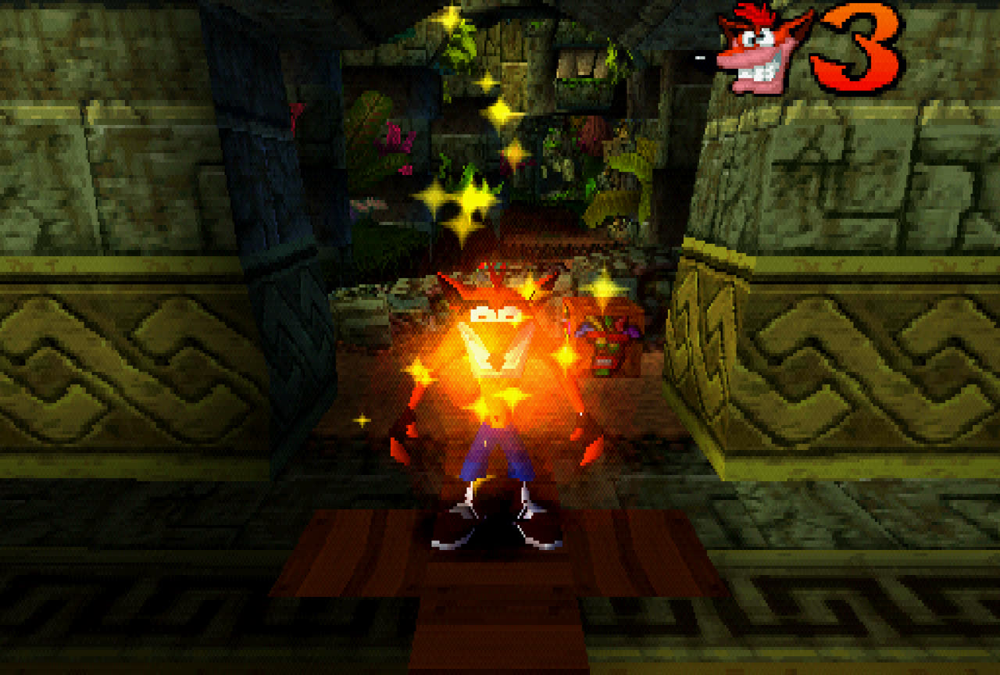

Crash Bandicoot has 6 bosses, two of them are just "jump on the boss/thing" but to at least go through them...
In the Japanese version you have to jump on Papu Papu 5 times, compared to the US release of 3.
You are able to immediately jump on Papu when he slams his staff down.
You need to wait for him to stop flashing to be able to jump on him again,
this is just before Papu Papu completes a full revolution.
Ripper Roo has 3 health bars, and he moves in three separate patterns.
You start with two masks in this fight.
| Phase 1 | Phase 2 | Phase 3 |
|---|---|---|
|
⬜⬜⬜ ⬛⬛⬛ ⬜⬛⬜ |
⬜⬛⬜ ⬛⬜⬛ ⬜⬛⬜ |
⬜⬜⬜ ⬜⬛⬜ ⬛⬜⬛ |
| (dark squares is Ripper Roo's movement) | ||
Koala Kong takes 4 hits of damage.
You need to spin the three rocks that he throws at you,
whilst avoiding the TNT that's falling above you.
After the third rock is thrown he will carry to the center a larger rock.
This is the one you can spin back with,
but try to avoid hitting the minecarts when sending a rock back at Koala Kong.
On the first two the TNT will land only on the Left Side.
At the third and fourth phases there will be two that will fall,
one on the left then the center just before the TNT blows up where your safety is on the right,
a final one will fall from the center after the previous two explode.
This is where it's recommended to use the TNT Jumping to clear any spacing if you do have difficulty with this boss.
A relatively simple boss to deal with that has 6 health bars.
Wait for Pinstripe to complete his first round of firing then immediately go on the offensive,
you'll be able to attack him three times.
Go behind cover behind the chair and wait for his gun to jam to attack him again.
Pinstripe's movement is going from one side to the other then his gun will jam,
so just be covered on the opposite side to where he starts shooting.
On his last health he'll jam when he is in the center (one movement), so be ready to go at him.
What more experienced runners do is allow him to be on the right side first before dealing 3 damage on him,
as the fourth bit of damage will be immediate when he crosses back to the left side,
reducing the time spent dealing with the boss.
N. Brio has 9 health.
The first half of his fight is avoiding the red beakers that he throws at you
and Jump Spin on the green blobs that manifest from the green beakers.
When N. Brio is down to 3 health, he will throw six red beakers and turn into the Hulk.
When he's charging at you jump on the rubble that fell from above, then jump on Brio.
Cortex has 5 health, and is the final boss of the game.
You are looking for a green energy that you will be able to return to sender.
He also shoots out Pink ones at you and Blue ones that enter in from the side.
With the blue ones these are telegraphed where their height will be starting from and which height they'll be.
Mid-way through the third phase they will move diagonally, meaning it'll start off at the opposite of the starting height.
This is a real simple boss to learn and do, and I am kind of overcomplicating it a bit,
but this is just in case you haven't really played or remembered much about Crash Bandicoot.
And to help about it.
Even though this information isn't really necessary this is what he shoots in order of phases:
Phase 1: Two Pinks, One Green.
Phase 2: Pink, Blue (bot), Pink, Blue (bot), Blue (bot), 2 Greens.
Phase 3: Pink, Blue (bot), Blue (top), Pink, Green, Pink, Blue (bot), Blue (bot), Blue (top), 2 Greens.
Phase 4: 5 Pink (rapid), Green, 5 Pink (rapid), Green.
Phase 5: Green.
And that’s time.
If you want to be goofy and if you learn the timing,
you can jump off after Cortex and be rewarded with the credits or if you time it badly you have to fight Cortex again...
So don’t do what I did when I ran this game decades ago.
We’re now just going to be entering some Intermediate stuff that’s good to learn early.
If you want to learn more advanced techniques come join the Crash Bandicoot Speedrunning Server on Discord.
This is an essential trick that exists in the Lost City and Sunset Vista.
Both are the same trick, but are executed at different points.
This trick saves a lot of time as you avoid all obstacles at the cost of falling in the water and going back to the checkpoint.
So you're taking the head first approach to Crash Bandicoot any% and choosing to run the NTSC-U version.
Almost every level has a death abuse point so it's extremely important to keep your lives above zero at all times.
This is to prepare for a Game Over abuse midway through the run.
You do not death abuse in Hog Wild where you want to miss at least one box and The Lost City where you have to get the Green Gem
After the checkpoint towards the jungle area, jump into the pit.
When respawning the faster path is the trickier right side,
but everyone wants a safe platform below them so they take the left. :)
Note: If you're taking the invisibility mask approach as you're learning.
Go right where ! box bridge is instead of death abusing.
Towards the 4x3 stack of boxes (green gem's location) backtrack into the pit behind you.
Note: If you're carrying invisibility from N. Sanity Beach you'll exit at minimum 3 boxes,
these boxes are located in the Green Gem Path.
After reaching the checkpoint, fall into the pit in front of you.
After reaching the first checkpoint, fall into the pit in front of you.
Once you reach the top of the waterfall where the first checkpoint is located, fall down the waterfall.
After reaching the first checkpoint, fall into the pit in front of you.
After reaching the second checkpoint, fall into the pit.
Once you reach the first checkpoint, fall into the water.
After reaching the first checkpoint, fall towards the camera.
Jump to the side after reaching the first checkpoint.
After reaching the first checkpoint, fall into the pit in front of you.
This is the instance of a Game Over abuse.
Collect all three Tawna tokens within the level and complete the bonus round.
Game Over and Continue. You will now be at Koala Kong.
After reaching the first checkpoint, fall towards the camera.
After reaching the second checkpoint, die in the toxic goop.
When approaching the first checkpoint you want to be jumping on the box to electrocute Crash.
This is faster than falling.
After reaching the first checkpoint fall into the toxic goop.
After reaching the third checkpoint, fall into the pit behind you.
After reaching the first checkpoint, die to the spikes in front of you.
After reaching the first checkpoint, fall off to the side.
At the second checkpoint, fall into the pit below.
After reaching the first checkpoint, fall down into the pit beside you.
And that's Bandicoot Power~!.
To the top~!